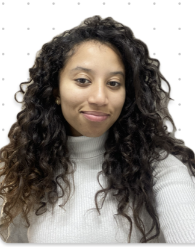
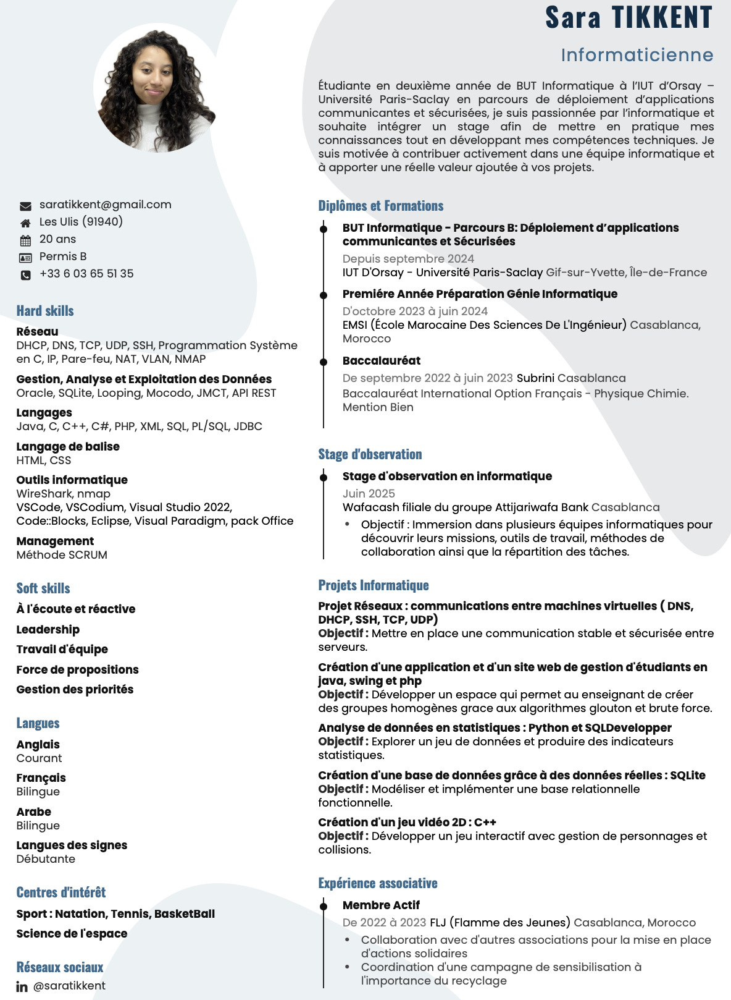

Je m'appelle Sara Tikkent, étudiant en deuxième année de BUT Informatique à l’IUT d’Orsay. Passionné par l’informatique, je souhaite me spécialiser dans la cybersécurité, un domaine en constante évolution.
Depuis le début de ma formation, mon intérêt pour l'architecture des réseaux et la sécurité n'a cessé de croître. J’aime analyser comment les données sont structurées et transformées en solutions sécurisées. Mes compétences complémentaires en développement et en base de données viennent enrichir ma vision globale de l'informatique.

J'aime apprendre de nouvelles langues que telles l'espagnol, l'allemend, langue des signes, ...
Dans mon temps libre je fais de la natation ou bien du basket.
J'aime découvrire et participer à des activités en relation avec cette science.
